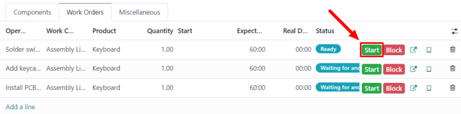
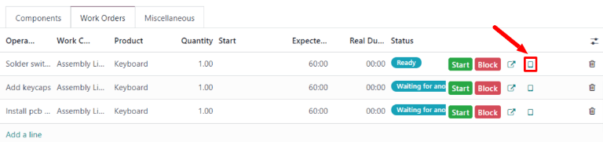

Fabricación en un paso¶
La aplicación Fabricación de Odoo permite que los usuarios fabriquen productos en uno, dos o tres pasos. Si utiliza la fabricación de un solo paso, Odoo crea una orden de fabricación, pero no genera traslados para el movimiento de componentes fuera del inventario o de productos terminados al inventario. Las cantidades en el inventario se actualizan según la cantidad de componentes utilizados y productos fabricados, pero no se realiza un seguimiento del traslado de estos hacia y desde el inventario.
Truco
El número de pasos utilizados en la fabricación se establece a nivel de almacén, esto permite que cada almacén utilice un número diferente de pasos. Si desea cambiar el número de pasos utilizado para un almacén específico, vaya a y seleccione un almacén de la pantalla Almacenes.
En la pestaña configuración del almacén, vaya al campo de entrada guilabel:Fabricación y seleccione una de las tres opciones: Fabricación (1 paso), Elegir componentes y luego fabricar (2 pasos), o Elegir componentes, fabricar y luego almacenar los productos (3 pasos).

Importante
Debe configurar los productos correctamente antes de fabricarlos. Si desea obtener más información sobre cómo hacerlo, consulte la documentación sobre cómo configurar un producto para la fabricación.
Crear una orden de fabricación¶
Si desea fabricar un producto en la aplicación de Odoo Fabricación, vaya a , y haga clic en Nuevo para crear una nueva |orden de fabricación|.
Desde la nueva |orden de fabricación|, seleccione el producto a fabricar del menú desplegable Producto. El campo lista de materiales se completa de forma automática con la lista de materiales asociada.
Si tiene un producto con más de una |lista de materiales| configurada, puede seleccionar la |lista de materiales| específica en el campo lista de materiales, y el campo producto se completa automáticamente con el producto asociado.
Después de haber seleccionado una |lista de materiales|, las pestañas componentes y órdenes de trabajo se completan de forma automática con los componentes y operaciones especificados en la |lista de materiales|. Si necesita agregar componentes u operaciones a la |lista de materiales| que esté configurando, hágalo en las pestañas componentes y órdenes de trabajo mediante el botón agregar una línea.
Proceso de orden de fabricación¶
Una orden de fabricación se procesa al completar todas las órdenes de trabajo enumeradas en la pestaña órdenes de trabajo. Esto se puede hacer desde la orden de fabricación o desde la vista de la tableta de órdenes de trabajo.
Flujo básico¶
Si desea completar las órdenes de trabajo desde la orden de fabricación vaya a y seleccione una orden de fabricación.
En la página de orden de fabricación, seleccione la pestaña órdenes de trabajo. Una vez que comience el trabajo en la primera orden de trabajo que debe completarse, haga clic en el botón iniciar para esa orden de trabajo. La aplicación Fabricación iniciará un temporizador que registra cuánto tiempo lleva completar la orden de trabajo.
Cuando se complete la orden de trabajo, haga clic en el botón Hecho para esa orden de trabajo. Repita el mismo proceso para cada orden de trabajo enumerada en la pestaña órdenes de trabajo.

Una vez que completó todas las órdenes de trabajo, haga clic en producir todo en la parte superior de la pantalla para marcar la orden de fabricación como hecha y registrar los producto fabricado en inventario.
Flujo en vista de tableta¶
Si desea completar las órdenes de trabajo para una orden de fabricación mediante la vista de tableta, vaya a , y seleccione una orden de fabricación.
Ahora haga clic en la pesta√±a √≥rdenes de trabajo y seleccione el bot√≥n üì± (tableta) en la l√≠nea de la primera orden de trabajo que se vaya a procesar. Esto abrirá la vista de la tableta.
Una vez que abra la vista de la tableta, la aplicación Fabricación iniciará automáticamente un temporizador que lleva un registro de cuánto tiempo falta para completar la orden de trabajo. Después de completar la orden de trabajo, haga clic en el botón marcar como hecho en la esquina superior derecha de la vista de la tableta.
Si hace clic en Marcar como hecho con al menos una orden de trabajo por completar, se abrirá una página que lista la siguiente orden de trabajo. Haga clic en esa orden de trabajo para abrirla en la vista de tableta.
Una vez que termine la orden de trabajo final para la orden de fabricación, aparecerá un botón Marcar como hecho y cerrar orden de fabricación en la vista de la tableta además del botón Marcar como Hecho. Haga clic en Marcar como hecho y cerrar orden de fabricación para marcar la orden de fabricación como hecha y registrar los productos fabricados en el inventario.
También puede completar la operación final con la orden de fabricación abierta, solo debe hacer clic en marcar como hecho. Si desea hacerlo así, podrá cerrar la orden de fabricación más tarde haciendo clic en el botón Producir todo.